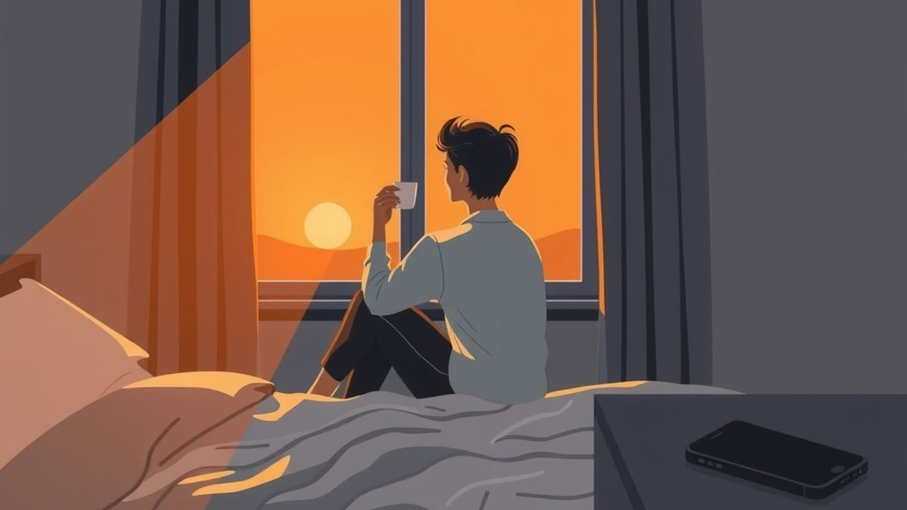
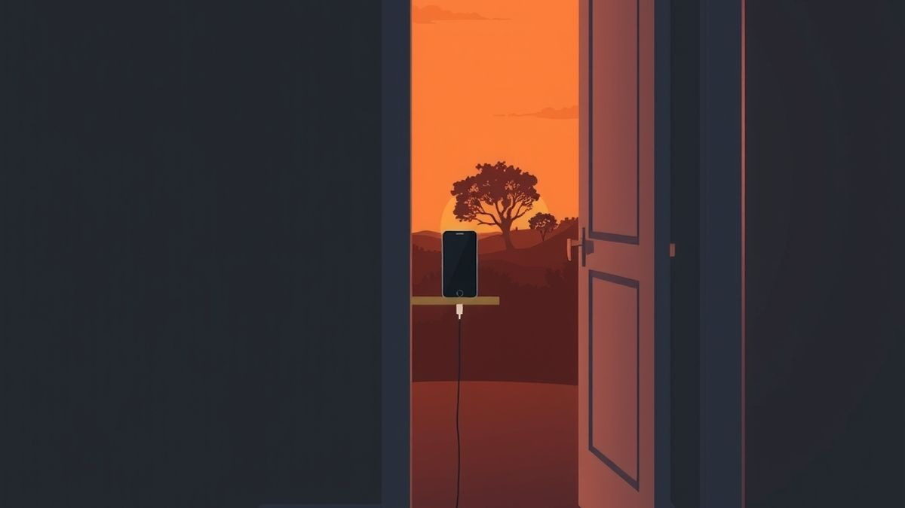
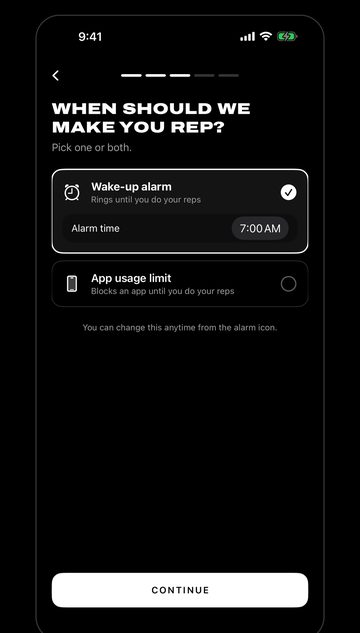

How to Stop Checking Your Phone First Thing in the Morning
How to stop checking your phone first thing in the morning: a 3-minute night-before setup, the iOS 27 settings that help, and a better first 10 minutes.


TL;DR
- Most people check their phone within 15 minutes of waking. The fix is setup, not willpower: charge the phone out of reach and move the alarm off your nightstand.
- In iOS 27, set a Scheduled Summary for 30 minutes after you wake, show notifications as a Count, and schedule a "Morning" Focus with a plain Home Screen page.
- The "phone spikes your cortisol" claim isn't backed by research. The better reasons: fewer checks went with less stress in a 124-person trial, and the phone takes the place of morning light.
- Aim for 30 phone-free minutes. Start with 5 and add a step each week.
- Fill the gap: feet on the floor, water, light, ten easy squats, one decision.
6:45. The alarm goes off. Your thumb kills it, and since the phone is already in your hand and already unlocked, it opens one more thing.
Three emails you can't answer yet. A group chat that ran until 1 a.m. A headline. 7:10, and you're still horizontal and already behind.
If you want to stop checking your phone first thing in the morning, start here: that reach isn't a decision. It's a setup. The phone is the alarm, it lives 30 centimeters from your face, and it opens straight into everything everyone else wants from you.
You're not unusual. In Deloitte's 2016 survey of US phone owners, nearly two-thirds said they check their phone within 15 minutes of waking, and 90% within an hour.
So don't fight it with willpower at 6:45. Use three changes the night before, a few iPhone settings for the first 30 minutes, and something better to do with your hands. Here's the whole plan.
How to stop checking your phone first thing in the morning: the short version
Make the phone hard to reach, make it boring when you do reach it, and give the first 10 minutes a job.
- Move the alarm. Use a cheap alarm clock, or put the phone across the room so you have to stand up to turn it off.
- Hold the notifications. Schedule them to arrive as one summary after your first 30 minutes.
- Strip the screen. A morning Focus with one plain Home Screen page, so unlocking the phone shows a clock and the weather, not a feed.
- Fill the gap. Light, water, a minute of movement. The habit needs a replacement, not just a ban.
- Start small. Five phone-free minutes this week. Fifteen next week. Thirty after that.
The rest of this post is how to do each one, and whether it's worth it.
Tonight: the 3-minute setup that makes the morning easy
You won't out-argue a glowing screen at 6:45 a.m. You can win the argument at 10 p.m., when you're awake and it costs nothing.
1. Charge it somewhere you have to walk to
The single biggest change is distance. If the phone is on a dresser, a hallway shelf or a kitchen counter, the first move of your day becomes standing up, not scrolling. Even across the bedroom works. Plug it in before you get into bed and leave it there.

2. Give the alarm a different job
If the phone has to be the alarm, it has to be close, and then it's in your hand. A basic alarm clock breaks that. If you keep the phone as your alarm, put it far enough away that you're standing by the time it's quiet. We go deeper on getting up on the first alarm in Your Alarm Isn't Too Quiet. Your Bed Is Too Easy.
3. Leave tomorrow's first step out
Put a glass of water by the bed, a hoodie on the chair, shoes by the door. A visible first step gives your hands something to do that isn't the phone.
The iPhone settings for a phone-free first 30 minutes
These are current iOS 27 steps from Apple's iPhone User Guide. None of them lock you out. Together, they make the phone quiet and dull for the first half hour, which is often enough.
Push notifications to one summary, later
Go to Settings → Notifications → Scheduled Summary, turn it on and set the first summary for about 30 minutes after you wake up. Then choose which apps go into it: social, shopping, news, email. Leave Messages and Phone out, so anyone who really needs you still gets through right away.
Now the Lock Screen at 6:45 is mostly empty. Nothing to "just check."
While you're there, set the Lock Screen display to Count (Settings → Notifications, under the display options). You'll see a number instead of a stack of previews, so a headline can't pull you in from the Lock Screen.
Make a "Morning" Focus with a boring Home Screen
- Go to Settings → Focus, tap +, then Custom. Name it "Morning."
- Under People and Apps, allow only the few people who might truly need you early.
- Choose a Home Screen page for the Focus with only Clock, Weather, a music or podcast app, and nothing with a feed.
- Tap Add Schedule and set it from your wake-up time to 30 minutes later.
If you use a Sleep Focus, Apple ends it at your scheduled wake-up time. The Morning Focus picks up right there, so the phone goes from "asleep" to "plain" instead of straight to "everything."
One privacy note: if Share Focus Status is on, people who message you can see that you've silenced notifications. You can change that per person from their contact card.
Optional: a morning Screen Time window
For a harder line, iOS 27's Screen Time Schedule (Settings → Screen Time → Screen Time Schedule) lets you add a time window, say 6:45 to 7:15, with social and entertainment categories turned off. Keep Phone, Messages and anything you'd need in an emergency in Always Allowed. We cover the full setup, including a Screen Time passcode, in How to Use iPhone Downtime and Sleep Focus Together.
Be realistic: these are settings on your own phone, and someone set on scrolling can change them. Their job is to make the 6:45 scroll take several deliberate steps instead of zero.
Is it bad to check your phone first thing in the morning?
Probably not in the dramatic way you've heard. And it's still worth changing.
The popular claim is that checking your phone "spikes your cortisol" when you wake up. No study we could find tests that. And the best recent evidence undercuts the premise. In a 2025 University of Bristol study, researchers used an automated sampling system to measure cortisol before and after waking in 201 healthy adults aged 18 to 68. Cortisol was already rising in the hour before waking, and it didn't rise any faster in the hour after. Waking up itself wasn't the stress spike it's often made out to be.
So skip the hormone scare. Here are the reasons that hold up:
- Checking less often is less stressful. In a 2015 University of British Columbia experiment, 124 adults spent one week checking email only three times a day and another week checking whenever they liked. They reported lower daily stress in the limited week. People found the limit hard to keep, and it was email, not a morning study. But it's a fair hint that batching your checks beats grazing on them.
- The phone takes the slot that light should have. Bright morning light helps shift your body clock earlier; evening light pushes it later. In one small lab study, an hour of bright morning light moved people's body clock about 11 minutes earlier after a dim day had pushed it later. Twenty minutes under the covers with a screen is twenty minutes not by a window.
- You start the day answering other people. The first thing your brain does is react: to email, to a group chat, to the news. That's not a disorder. It's just a bad trade for the one quiet window most days have.
How long should you wait before checking your phone in the morning?
There's no proven number. Advice ranges from 15 minutes to two hours, and nobody has tested which is best.
A good target is 30 minutes: long enough to get up, get some light and move, short enough that it doesn't feel like a fast. If that's a jump, use a ladder:
| Week | Phone-free time after waking | Set your summary for |
|---|---|---|
| 1 | 5 minutes: stand up and drink water first | Wake time + 5 min |
| 2 | 15 minutes: add light and a minute of movement | Wake time + 15 min |
| 3 | 30 minutes: add breakfast or a shower | Wake time + 30 min |
| 4+ | Keep 30. Go longer on weekends if you like it | Wake time + 30 min |
Slip one morning? Nothing's broken. Same plan tomorrow. If you need to check something, like a shift time or a ride, do that one thing and put it back down.
What to do instead: a better first 10 minutes
An empty gap fills itself, usually with the phone. Give it a sequence:
- Sit up and put your feet on the floor. Stay there for 20 to 30 seconds. Some people get lightheaded standing up after sleep.
- Water. The glass you left out last night.
- Light. Open the curtains, or stand by a window or outside for a few minutes if you can.
- Move for one minute. Ten squats: feet about shoulder-width, sit back as if there's a chair behind you, chest up, then stand. Easier version: sit down on the edge of the bed and stand back up, slowly. Or march in place.
- Decide one thing. The one task that would make today count. Then go get the phone.
Want more than a minute? A 5-Minute Morning Workout You Can Do Next to Your Bed has a full routine with easier versions of every move. Stop anything that hurts. If you have an injury, joint pain, a heart condition, are pregnant or haven't been active in a long time, check with a doctor before adding exercise.
And if the reach for the phone comes with dread, or you can't get out of bed most days, that may be more than a habit. Talk to a doctor or a mental health professional. In the US you can call or text 988 any time.
Make the first thing you do a set
Rep Rot locks the apps you lose hours to until you get up and move. In the morning, that starts with the alarm: it only stops after you've done a set of squats, push-ups, sit-ups, pull-ups or a plank, counted by your iPhone's front camera right on the phone. Nothing is recorded or uploaded.

To be straight about the limits: once the alarm stops, Rep Rot doesn't hold your apps closed for the next half hour. Its app limits are a daily budget, so use the Scheduled Summary and Morning Focus above for the first 30 minutes. Rep Rot works through Apple's Screen Time system, so it can't see which apps you picked or how long you use them, and like any Screen Time limit, it can be worked around by someone determined. What it does well is the part this post is about: making standing up the first thing, not the feed.
Don't rot. Rep instead. Rep Rot is in testing now, with a free plan and a 7-day Pro trial: email help@reprotapp.com for early access.
Sources: Deloitte, "Americans look at their smartphones more than 9 billion times daily", 2016 Global Mobile Consumer Survey (US edition), press release; Klaas S et al., "Awakening not associated with an increased rate of cortisol secretion", Proceedings of the Royal Society B (2025), and University of Bristol, "Waking up is not stressful, study finds"; Kushlev K, Dunn EW, "Checking email less frequently reduces stress", Computers in Human Behavior (2015), via University of British Columbia; Ohashi M et al., "Relationship between Circadian Phase Delay without Morning Light and Phase Advance by Bright Light Exposure the Following Morning", Clocks & Sleep (2023); Apple, Change notification settings on iPhone (Scheduled Summary, Count); Apple, Set up a Focus on iPhone; Apple, Turn on or schedule a Focus on iPhone; Apple, Set up sleep in Health on iPhone; Apple, Turn your Sleep Focus on or off on iPhone; Apple, Set Screen Time Schedules and Time Allowances in Screen Time on iPhone; 988 Suicide & Crisis Lifeline, 988lifeline.org.